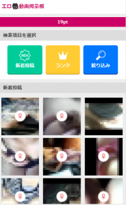
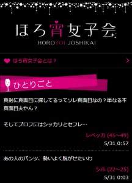

ミントC！Jメール

総合評価
★
★
★
★
★★
4.06
オススメポイント
- check_circleログインガチャでの無料チケット配布などうれしいキャンペーン付き
- check_circle渋谷のセンター街にどデカイマスコットキャラ
- check_circleシンプルで使い勝手抜群
- check_circle福岡など九州地方にユーザー多数
詳細概要
| 会員数 | 450万人 |
|---|---|
| ジャンル | 趣味友 飲み友 大人の関係 |
| 年齢層 | 10代～60代 |
| 出会いやすさ | 初心者向け |
| 料金 | ポイント制 |
| 信頼性 | 総務省 第二種電気通信事業届出番号 H-15-763 [福岡公安委員会]第90080006000号 |
キャンペーン情報
無料ポイントがもらえるキャンペーン
毎日ログインでポイントがもらえます。また1日2通までが無料キャンペーンを定期開催しているのもポイント。
新人検索機能

新人の会員をﾋﾟｯｸｱｯﾌﾟ。返信の確率も高い
写ﾒ動画ｻｰﾁ

過去に掲示板へ投稿したことがある会員様の中から、ｱﾅﾀの気になるﾎﾟｲﾝﾄ(年齢、ｽﾀｲﾙ、趣味、ﾀｲﾌﾟなど)に絞って検索できます。
ほろ酔い女子会

女の子同士の匿名掲示板。女同士の本音トーク。中には過激なエッチなトークも繰り広げられている。モテの秘訣が見つかることも。
スポンサーサイト登録で無料ポイントゲット

口コミ
匿名さん 千葉県 20 男性
会員数 4出会いやすさ 4コスパ 3コンテンツ 4エロさ 4
Ｊメールに現在使っているけど出会える！ Ｊメールのポイントは毎日ログインするだけで、５ポイントもらえるのでオススメ これを一ヶ月続けると１５０ポイントです。これで十分出会えるためのポイントは無料で出会う7ことだってできます。 さらに初回登録でもポイントがもらえるから、十分無料で利用できますよ。 あとプロフは気合いれて作りましょう。 ポイント消費は仕方ありません、良い子を見つけたらケチらずに使うこともひとつの方法。 ラインへの移行も。ケチな男と思われないように工夫して理由を考えてください。 また多くの人がポイント消費を嫌がるためにポイントをバンバン使う人は女性からモテます。
匿名さん 秋田県 20 男性
会員数 3出会いやすさ 4コスパ 4コンテンツ 3エロさ 4
使ってまだそんなに経っていないけどサクラやCB、業者じゃない素人もいました。出会えることは出会えるんじゃないかな。 業者とか金を要求してきそうなやつはいますから、難易度は高いかも！
男前さん 滋賀県 20 男性
会員数 3出会いやすさ 3コスパ 3コンテンツ 5エロさ 4
シンプルなデザインのアプリなら使いやすいし、実際に出会うこともできました。 ただ、それはアプリ版に限りです。 使って見たらわかると思いますがweb版はいつの時代なんだと言うほどしょぼいサイトデザイン。 なんだか本当に出会えるのか怪しいと感じるほどです。 女の子を探しやすいのもアプリ版なので、もし使うならアプリをおすすめします。 ただ、登録自体はサイトからの方じゃないと無料ポイントが入らないので気をつけて。
男前さん 東京都 10 男性
会員数 3出会いやすさ 3コスパ 3コンテンツ 3エロさ 5
初めて出会い系サイトに登録して見ました。 プロフィールの写真を登録したら、いきなり微妙なブス（可愛くもない微妙なライン）からメッセージがきてやり取りをしていくと会いたいと言われラインを交換して実際に会う流れに。 すると、ちょっとセクシーなデニムをきた年上の女の人が来てカラオケで手マンまでして、そのままホテル行きました。 でも一回やったら、猛烈に帰りたくなって女が終電もう無いとか言いだしても知らん顔で帰ろうとしました。 今でも帰り際に、ついて行っちゃうぞとボソッと言われたのが気持ち悪くて思い出します。 セックスは満点だったんで星５つで。
匿名さん 東京都 20 男性
会員数 3出会いやすさ 5コスパ 4コンテンツ 5エロさ 4
ここのサイト、確かに業者もキャッシュバッカーっぽいやつもいるんですけどコツさえわかってれば出会えます。 ・アダルトな内容の女には関わらないこと ・新人検索でなるべく普通の子を狙うこと この２つさえ守ってりゃ、競争率低いからよっぽど意味不明なこと送ったりしなかったら普通にやれる。 素人見つけるのはどのサイトでも使えるノウハウだし、出会い系使いこなすなら必須でしょ。
maさん 京都府 40 男性
会員数 3出会いやすさ 3コスパ 5コンテンツ 4エロさ 5
適当に可愛い女の子にメッセージ送りまくってました。 すると、一人の女の子となんかたまたま地元が近くて仲良くなってラインを交換。 住んでるとこが遠かったから、会えなかったけどオナ電したりエロ写メ交換してました。 実は、イケメンの写メ使ってだましてたんですけどね。 女の子もイケメンと思ってオナニーしてたら、おっさんと知ったらびっくりするだろうなあ。
nyannyanさん 山形県 10 女性
会員数 3出会いやすさ 4コスパ 3コンテンツ 4エロさ 3
友達とどっちがメールくるか勝負して見た。 私の方が、ちょっと大人の服着てたから勝負に勝った！ こう言うの全く出会う気なかったけど、タイプの人いたし、今度会ったくるw
敏夫さん 宮崎県 30
会員数 3出会いやすさ 4コスパ 5コンテンツ 4エロさ 5
九州にユーザーが多いって聞いて登録して見た。 実際、うちの地元で検索して見たら結構人がいて笑った。 知ってるやつもいたから、あんまり田舎でわかりやすいとこで登録するのはやめておくべし。 俺は福岡で登録しておいたw 結構、福岡の方で女の子とあってるから九州に住んでる人なら使える。
うえださん 東京都 20 男性
会員数 4出会いやすさ 5コスパ 5コンテンツ 5エロさ 5
良くも悪くも色々言われてるJメールだけど、俺は出会えました！ 三通くらいやりとりしてライン交換して、実際にあってそのままカラオケで遊んでホテルへ。 サイトでは300円くらいしか使ってないのでコスパもいいと思う！
akiさん 神奈川県 20 女性
会員数 4出会いやすさ 4コスパ 4コンテンツ 4エロさ 4
最近は月一でしか会えてないけど、ここで彼氏をつくりました！初めてあったのが、一年前くらいでサイトでずっとやりとりしてたけど向こうから誘ってくれて会いました。
すねおさん 京都府 30 男性
会員数 3出会いやすさ 4コスパ 4コンテンツ 4エロさ 4
若干他のサイトに比べて業者多いかなーって思ってたけど、偏見でした。ポイントも色々工夫すれば無料ポイントで結構もらえるからそれが後押ししてくれたって思います。
こよみさん 北海道 10 男性
会員数 3出会いやすさ 3コスパ 5コンテンツ 5エロさ 5
素人の女の子のエロ動画サーチがほんとに抜けた。あんまり女の子と直接やり取りするのは苦手なので、たまにこのサイト使って素人の女の子とえろいやりとりして、抜いてます。おかずに困ったらおすすめ。
あきら0パーセントさん 山梨県 30 男性
会員数 3出会いやすさ 3コスパ 4コンテンツ 4エロさ 2
Jメールは、渋谷とか言った時にも広告みたりして前々から知ってた有名サイト。 使ってみたけどまだエッチはできてません。何人かやりとりしてる感じ。もーちょい早く成果がでるのかなって期待してただけに少し残念。
Macさん 京都府 20 男性
会員数 3出会いやすさ 4コスパ 3コンテンツ 4エロさ 4
他のサイトに比べてあまり男子がガツガツしてない印象。いきなりエロメッセージ送ったりしない限り普通に出会えるw
mmさん 兵庫県 20 男性
会員数 3出会いやすさ 5コスパ 4コンテンツ 4エロさ 5
Jメールはきもいやつが多いイメージで放置気味でしたが、久しぶりにやってみたら結構スタイルいい子と会えました！人数は少ないけど、その分返信がきやすいのはあると思うので今くらいが狙い目やと思います！
ゆーたさん 福岡県 20 男性
会員数 4出会いやすさ 5コスパ 5コンテンツ 5エロさ 5
名前だけ知ってたjメールを初利用。 思ってたよりだいぶ可愛い子がいて、びっくりしました。(業者を除く) 近所の子とも何人かライン交換できたので、迷ってたら女の子の質だけみてやるかどうか決めるのがいいと思います。
kyosukeさん 京都府 30 男性
会員数 4出会いやすさ 5コスパ 5コンテンツ 5エロさ 3
同い年の人妻とここで出会って関係を持ちました。感想としてはコスパがいいですね。ある程度絞って検索する必要がありますけど、1000円で1人やれたってのはいいかと。
オクムラさん 埼玉県 20 男性
会員数 4出会いやすさ 4コスパ 4コンテンツ 5エロさ 5
3000円課金してみました！！ラインが2件くらい交換できて、一人と会えました。普通の顔でしたがその日に持ち帰れたのでまあまあありかな。 街コン行くよりライトに出会えるのでオススメ
gmoさん 埼玉県 20 男性
会員数 5出会いやすさ 5コスパ 5コンテンツ 4エロさ 4
ユーザーの質は若干わるいものの(業者がいる)それを上回るだけの競争率の低さがあるので結果的には会えます。ただそこまでいかずに業者にあたってすぐ辞める人が多いので会えてないんじゃって思うので、諦めずにやることが近道とおもいます。
ippoさん 福岡県 20 男性
会員数 4出会いやすさ 4コスパ 5コンテンツ 4エロさ 4
ネットで評価良かったので登録しました！サクラとかそーゆーのは当たらなかったし、なんだかんだですぐ会えてセフレができました。清楚系ピッチっていう感じの子が多いイメージです。
ねねさん 東京都 20 女性
会員数 5出会いやすさ 4コスパ 5コンテンツ 5エロさ 5
最近使ってなかったけどやっぱりいい。寂しい時にすぐ会ってくれる人がいるからやっぱりハマっちゃう。